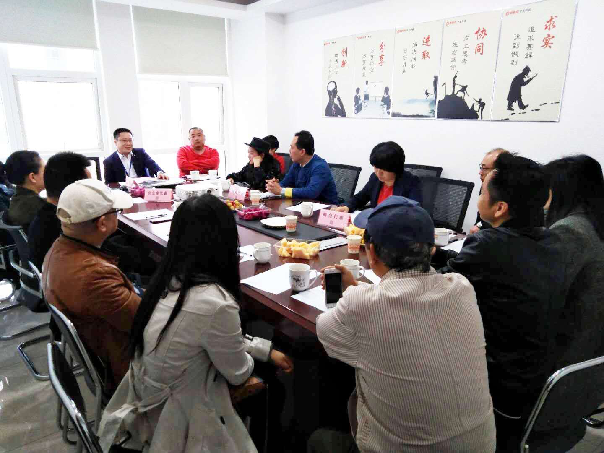
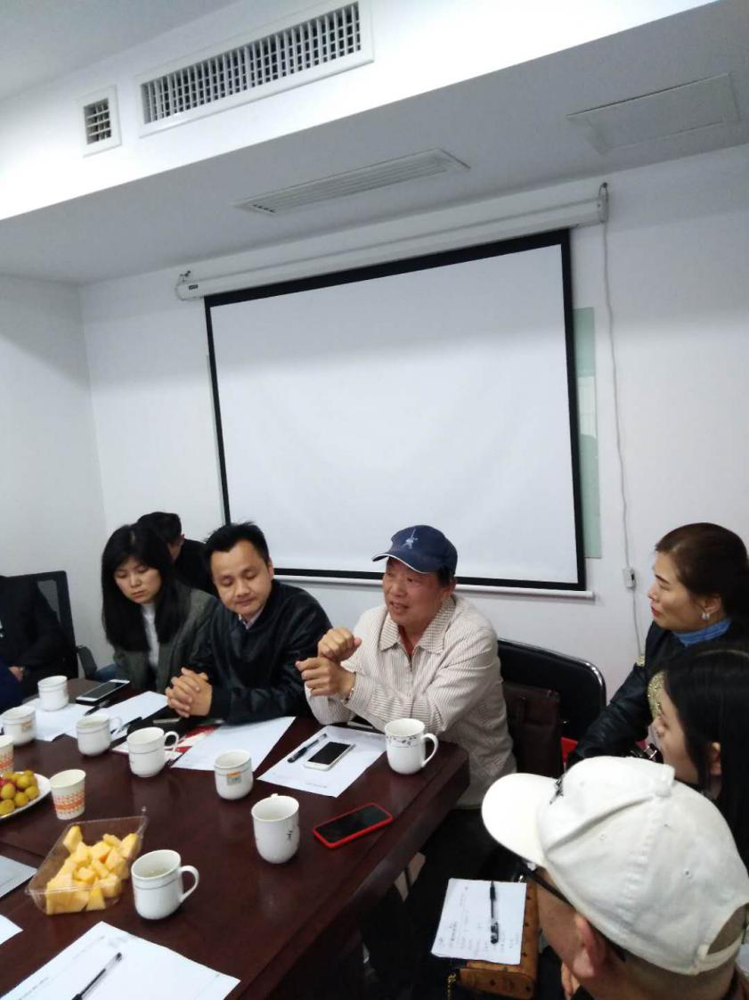

4月11日下午3点，由中灵科技(集团)有限公司主办的“我们约慧吧”商协会会长、秘书长、企业家沙龙活动，在中灵科技集团会议室热烈举行。本次沙龙活动以“分享，整合，跨界，突破”为主题，旨在通过多方探讨帮助企业解决困惑和问题。来自湖南省内的多个行业和异地商协会、研究会的会长和秘书长，以及各界企业方代表，共20余人参与了此次沙龙活动。
沙龙活动现场
沙龙活动由中灵科技集团总裁周志儒主持，活动采用引导发言、互动讨论两个环节交叉进行，围绕“企业痛点问题有哪些，商协会如何帮助企业解决”这一专题展开讨论。在交流环节，湖南国猿猕猴桃公司、天宇实业集团、咨询管理学院、长沙千周软件公司等企业方代表，提出了企业在内部管理、市场营销、品牌推广、人才引进、资金融通、生产成本等方面所遇到的困惑和问题，各商协会的代表针对企业的问题纷纷支招，发表了自己的见解，也提出了相应的对策。
企业代表提出问题
商协会代表为企业支招
整个过程中，商协会之间、商协会与企业之间，企业之间，都以开放的心态畅所欲言，展开热烈的讨论和互动，通过分享心得、交流经验、激荡智慧的多方探讨形式，帮助企业找到解决痛点问题的“钥匙”，同时也提升了商协会服务会员的能力，实现多方共同成长和发展。
本期沙龙汇聚了来自各界商协会、研究会、企业的声音，既有直陈痛点的提问，也有经典案例的分享，也有经验智慧的交流，还有自由讨论集中意见观点的发表，对企业的现实问题展开了热烈讨论，深度碰撞，最终找到理想方案，为企业排忧解难。
在沙龙现场，大家各抒己见，积极提问，踊跃发言，激情讲解，思维火花的激烈碰撞，观点见解的正面交锋，让气氛时而紧张，时而诙谐，与谈人员都沉浸在生动、活跃、热闹的探讨氛围中，不知不觉中沙龙时间已远远超过了原定计划。
会议接近尾声时，沙龙活动主持人周总应现场商协会领导强烈要求，分享了中灵科技集团的战略定位和中灵旗下票票库平台的模式介绍，引起了与会者浓厚的兴趣，并对中灵集团顶层设计以及精英团队给予了高度评价。下午6点，在周总的总结陈词中，“我们约慧吧”沙龙活动圆满结束。活动结束后，沙龙活动主办方邀请参与人员一同愉快地共进晚宴
本次沙龙活动在晚宴现场获得了所有参与人员的交口赞誉。大家纷纷表示，“我们约慧吧”品牌沙龙活动为企业提供了一个学习的平台和机会，也为商协会拓展了服务会员企业的思维与能力，大家都感到受益良多，希望未来多举办一些主题性活动，把沙龙活动做成一个常态性的跨界互动、多方探讨的交流平台，也希望下次还有机会参与进来学习。
最后，非常感谢湖南家电行业商会曾广林会长对本次沙龙活动的全程赞助。